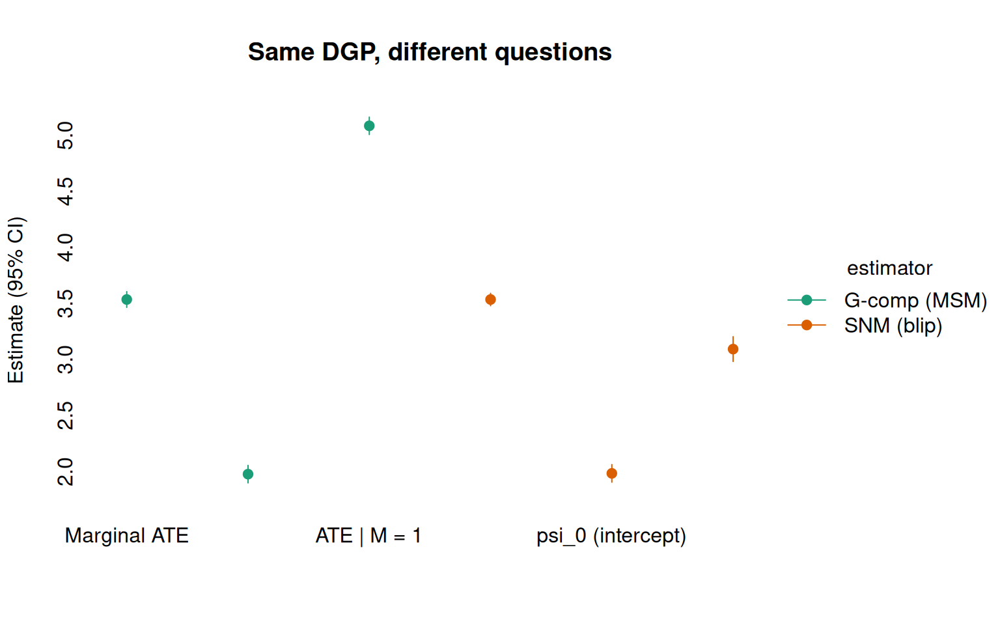
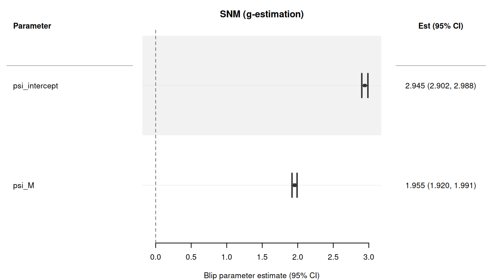

Code
library(causatr)
set.seed(1800)
n <- 5000
L <- rnorm(n)
M <- rbinom(n, 1, 0.5)
A <- rbinom(n, 1, plogis(0.3 * L + 0.2 * M))
Y <- 1 + 2 * A + 3 * A * M + 0.5 * L + 0.8 * M + rnorm(n)
d <- data.table::data.table(Y = Y, A = A, L = L, M = M)Structural nested mean models (SNMMs) are the third leg of the Robins triangle — alongside g-formula (gcomp/ICE) and inverse probability weighting (IPW-MSM). They estimate blip parameters that describe how treatment at each time point causally shifts the outcome, conditional on covariates.
The headline feature: SNMMs correctly handle time-varying effect modification — modifiers that are themselves affected by treatment. IPW-MSM and matching require modifiers to be baseline (pre-treatment) variables; conditioning on a post-treatment modifier in an MSM opens collider paths and biases the estimand (Robins 2000). SNMMs identify the blip under treatment-model correctness alone, so post-treatment modifiers are valid (Vansteelandt & Joffe 2014).
Before diving into settings where only SNMs work, it helps to see what makes them different — even in settings where both estimators are perfectly valid.
The core distinction (Robins 2000):
Both encode the same underlying causal truth, but through different lenses. MSMs give you summary-level potential outcomes under hypothetical regimes. SNMs give you the architecture of the treatment effect — how it varies across covariate strata.
G-computation and IPW-MSM both compute counterfactual means \(\hat{E}[Y(a)]\) for each intervention regime, then contrast them. The output is an ATE — a single summary number:
fit_gc <- causat(d, outcome = "Y", treatment = "A",
confounders = ~ L + M + A:M, estimator = "gcomp",
model_fn = stats::glm)
r_gc <- contrast(fit_gc,
interventions = list(a1 = static(1), a0 = static(0)),
type = "difference", ci_method = "sandwich")
r_gc$contrasts
#> comparison estimate se ci_lower ci_upper
#> <char> <num> <num> <num> <num>
#> 1: a0 vs a1 -3.535713 0.03569227 -3.605668 -3.465757The g-comp estimate gives \(\widehat{\text{ATE}} \approx 3.5\), the correct marginal treatment effect. This answers: “On average, how much does treatment help?”
To uncover subgroup-specific effects, the MSM/g-comp approach can be stratified with by:
r_gc_by <- contrast(fit_gc,
interventions = list(a1 = static(1), a0 = static(0)),
type = "difference", ci_method = "sandwich",
by = "M")
r_gc_by$contrasts
#> comparison estimate se ci_lower ci_upper by n_by
#> <char> <num> <num> <num> <num> <char> <int>
#> 1: a0 vs a1 -1.977829 0.03973574 -2.055709 -1.899948 0 2493
#> 2: a0 vs a1 -5.084897 0.03959283 -5.162498 -5.007297 1 2507Now we see the subgroup-specific ATEs: \(\approx 2\) when \(M = 0\) and \(\approx
5\) when \(M = 1\). But these are still counterfactual mean differences — the MSM framework has no single parameter that directly represents the modification effect. You need to run the estimator twice (or use by) and then compare the subgroup estimates by eye. The effect modification itself is a derived quantity, not a model parameter.
The SNM directly estimates the blip parameters \(\psi\) that describe how treatment modifies the outcome as a function of covariates:
fit_snm <- causat(d, outcome = "Y", treatment = "A",
confounders_outcome = ~ L + M + A:M,
confounders_treatment = ~ L + M,
estimator = "snm",
treatment_free = ~ L + M)
#> Warning: `propensity_model_fn` not specified; defaulting to `stats::glm`.
#> ℹ Set `propensity_model_fn` explicitly if you need a different fitter (e.g. `mgcv::gam`).
r_snm <- contrast(fit_snm, ci_method = "sandwich")
r_snm$estimates
#> parameter estimate se ci_lower ci_upper
#> <char> <num> <num> <num> <num>
#> 1: psi_intercept 1.984661 0.04000629 1.906250 2.063072
#> 2: psi_M 3.093240 0.05641067 2.982677 3.203803The SNM output is not a counterfactual mean or a contrast between regimes. It is the effect modification structure itself: \(\hat\psi_0 \approx 2\) (effect when \(M = 0\)) and \(\hat\psi_M \approx 3\) (additional effect when \(M = 1\)). These are directly interpretable:
The MSM’s marginal ATE and the SNM’s blip parameters encode the same causal truth. The averaged blip, \(\Delta = (a_1 - a_0) \cdot (\hat\psi_0 + \hat\psi_M \cdot \bar{M})\), recovers the MSM’s ATE:
r_avg <- contrast(fit_snm, treatment_values = c(0, 1))
r_avg$estimates
#> parameter estimate se ci_lower ci_upper
#> <char> <num> <num> <num> <num>
#> 1: avg_blip_effect 3.535611 0.02820541 3.48033 3.590893The averaged blip estimate (\(\approx 3.5\)) matches the g-comp estimate. The SNM decomposes this average into its components; the MSM reports the composite directly.
The following figure shows all six estimates side by side. The g-comp (MSM) panel reports counterfactual mean differences at three levels of aggregation; the SNM (blip) panel reports the structural effect parameters. Both recover the truth (dashed lines), but through different lenses:
comp_df <- data.frame(
estimator = factor(
rep(c("G-comp (MSM)", "SNM (blip)"), each = 3),
levels = c("G-comp (MSM)", "SNM (blip)")
),
parameter = factor(
c("Marginal ATE", "ATE | M = 0", "ATE | M = 1",
"Averaged blip", "psi_0 (intercept)", "psi_M (modifier)"),
levels = c("psi_M (modifier)", "psi_0 (intercept)", "Averaged blip",
"ATE | M = 1", "ATE | M = 0", "Marginal ATE")
),
estimate = c(-r_gc$contrasts$estimate[1],
-r_gc_by$contrasts$estimate[1],
-r_gc_by$contrasts$estimate[2],
r_avg$estimates$estimate[1],
r_snm$estimates$estimate[1],
r_snm$estimates$estimate[2]),
ci_lower = c(-r_gc$contrasts$ci_upper[1],
-r_gc_by$contrasts$ci_upper[1],
-r_gc_by$contrasts$ci_upper[2],
r_avg$estimates$ci_lower[1],
r_snm$estimates$ci_lower[1],
r_snm$estimates$ci_lower[2]),
ci_upper = c(-r_gc$contrasts$ci_lower[1],
-r_gc_by$contrasts$ci_lower[1],
-r_gc_by$contrasts$ci_lower[2],
r_avg$estimates$ci_upper[1],
r_snm$estimates$ci_upper[1],
r_snm$estimates$ci_upper[2]),
truth = c(3.5, 2, 5, 3.5, 2, 3)
)
tinyplot::tinyplot(
estimate ~ parameter | estimator,
data = comp_df,
type = "pointrange",
ymin = comp_df$ci_lower,
ymax = comp_df$ci_upper,
pch = 19,
ylab = "Estimate (95% CI)",
xlab = "",
main = "Same DGP, different questions",
palette = "dark2",
axes = "l"
)
The subgroup-specific MSM estimates (\(\text{ATE} \mid M = 0\) and \(\text{ATE} \mid M = 1\)) correspond to the blip evaluated at each modifier level. But the mapping is one-directional: you can always aggregate blip parameters into an ATE, but you cannot decompose an ATE into blip parameters without specifying a blip model.
In this simple baseline-modifier setting, both estimators work and the choice is about what you want to report:
| Goal | Better tool |
|---|---|
| Population-level treatment policy decision | MSM (counterfactual means under regimes) |
| Understanding who benefits most from treatment | SNM (blip parameters directly quantify heterogeneity) |
| Formal test of effect modification | SNM (\(z\)-test on \(\psi_M\)) |
| Dose-response under a specific intervention | MSM with shift() or scale_by() |
| Optimal treatment rule (DTR) estimation | SNM (blip sign determines optimal assignment) |
The next section shows where the SNM is not just convenient but necessary: when the modifier is itself affected by treatment. There, the MSM cannot include \(M\) without introducing collider bias, while the SNM handles it natively.
When your research question involves effect modification by a variable that is itself affected by treatment, the standard estimators produce biased results. This section demonstrates the problem with a simulated DGP and shows that SNM g-estimation recovers the truth.
set.seed(1801)
n <- 5000
L <- rnorm(n)
A <- rnorm(n, mean = 0.5 * L, sd = 1)
# M is post-treatment: it depends on A
M <- 0.3 * A + 0.5 * L + rnorm(n, sd = sqrt(0.5))
# Y depends on A, L, and the A*M interaction
Y <- 2 + 3 * A + 1.5 * L + 2 * A * M + rnorm(n)
d <- data.table::data.table(Y = Y, A = A, L = L, M = M)The structural blip is \(\gamma(a, m; \psi) = a \cdot (\psi_0 + \psi_M \cdot m)\) with truth \(\psi_0 = 3\) and \(\psi_M = 2\).
When we include M as an effect modifier in an IPW-MSM, the estimator conditions on a descendant of A. This opens a non-causal path and produces severely biased estimates:
fit_ipw <- causat(d, outcome = "Y", treatment = "A",
confounders = ~ L + A:M, estimator = "ipw")
#> Warning: `model_fn` not specified; defaulting to `stats::glm`.
#> ℹ Set `model_fn` explicitly (e.g. `model_fn = stats::glm` or `model_fn = mgcv::gam`).
#> Warning: `propensity_model_fn` not specified; defaulting to `stats::glm`.
#> ℹ Set `propensity_model_fn` explicitly if you need a different fitter (e.g. `mgcv::gam`).
r_ipw <- contrast(fit_ipw,
interventions = list(a1 = shift(1), a0 = shift(0)),
type = "difference")
r_ipw$contrasts
#> comparison estimate se ci_lower ci_upper
#> <char> <num> <num> <num> <num>
#> 1: a0 vs a1 -2.049563 0.07879844 -2.204005 -1.895121Since \(M = 0.3A + 0.5L + \epsilon\) with \(A\) and \(L\) both mean-zero, \(\bar{M} \approx 0\) and the true averaged blip is \(\approx 3 + 2 \times 0 = 3\). The IPW estimate is substantially biased away from this value.
The SNM identifies the blip using the treatment residual as an instrument. With a treatment-free model to absorb the \(L \to Y\) pathway, the structural blip parameters are recovered:
fit_snm <- causat(d, outcome = "Y", treatment = "A",
confounders_outcome = ~ L + A:M,
confounders_treatment = ~ L,
estimator = "snm",
treatment_free = ~ L)
#> Warning: `propensity_model_fn` not specified; defaulting to `stats::glm`.
#> ℹ Set `propensity_model_fn` explicitly if you need a different fitter (e.g. `mgcv::gam`).
# Blip parameter table
r_blip <- contrast(fit_snm, ci_method = "sandwich")
r_blip$estimates
#> parameter estimate se ci_lower ci_upper
#> <char> <num> <num> <num> <num>
#> 1: psi_intercept 3.017628 0.01443905 2.989328 3.045928
#> 2: psi_M 1.988832 0.01263058 1.964076 2.013587The estimated \(\hat\psi_0 \approx 3\) and \(\hat\psi_M \approx 2\) match the truth closely, with tight standard errors.
To get a single summary number (like an ATE), use treatment_values:
r_avg <- contrast(fit_snm, treatment_values = c(0, 1))
r_avg$estimates
#> parameter estimate se ci_lower ci_upper
#> <char> <num> <num> <num> <num>
#> 1: avg_blip_effect 3.024219 0.01443917 2.995918 3.052519The contrast between the two approaches is clearest in a figure. The IPW-MSM estimate (biased downward) is far from the true averaged blip (\(\approx 3\), dashed line), while the SNM recovers the truth:
bias_df <- data.frame(
Method = factor(
c("IPW-MSM (biased)", "SNM (correct)"),
levels = c("IPW-MSM (biased)", "SNM (correct)")
),
estimate = c(-r_ipw$contrasts$estimate[1],
r_avg$estimates$estimate[1]),
ci_lower = c(-r_ipw$contrasts$ci_upper[1],
r_avg$estimates$ci_lower[1]),
ci_upper = c(-r_ipw$contrasts$ci_lower[1],
r_avg$estimates$ci_upper[1])
)
# Approximate truth: 3 + 2 * mean(M) where M = 0.3*A + 0.5*L + noise
avg_blip_truth <- 3 + 2 * mean(d$M)
tinyplot::tinyplot(
estimate ~ Method,
data = bias_df,
type = "pointrange",
ymin = bias_df$ci_lower,
ymax = bias_df$ci_upper,
pch = 19,
ylab = "Effect estimate (95% CI)",
main = "Post-treatment effect modification:\nIPW-MSM vs SNM"
)
abline(h = avg_blip_truth, lty = 2, col = "grey40")
set.seed(42)
n <- 2000
L <- rnorm(n)
sex <- rbinom(n, 1, 0.5)
A <- rbinom(n, 1, plogis(0.3 * L + 0.2 * sex))
Y <- 1 + 2 * A + L + 1.5 * A * sex + rnorm(n)
d <- data.table::data.table(Y = Y, A = A, L = L, sex = sex)
fit <- causat(d, outcome = "Y", treatment = "A",
confounders_outcome = ~ L + sex + A:sex,
confounders_treatment = ~ L + sex,
estimator = "snm",
treatment_free = ~ L + sex)
#> Warning: `propensity_model_fn` not specified; defaulting to `stats::glm`.
#> ℹ Set `propensity_model_fn` explicitly if you need a different fitter (e.g. `mgcv::gam`).
contrast(fit, ci_method = "sandwich")Estimator: snm · Estimand: ATE · Contrast: difference · CI method: sandwich · N: 2000
| parameter | estimate | se | ci_lower | ci_upper |
|---|---|---|---|---|
| psi_intercept | 1.921 | 0.069 | 1.786 | 2.056 |
| psi_sex | 1.658 | 0.095 | 1.473 | 1.844 |
The blip parameters are: \(\psi_{\text{intercept}}\) (treatment effect when sex = 0) and \(\psi_{\text{sex}}\) (additional effect when sex = 1).
SNMs work naturally with continuous treatments — the canonical SNMM case. The treatment model is a Gaussian GLM by default:
set.seed(101)
n <- 2000
L <- rnorm(n)
A <- rnorm(n, mean = 0.5 * L, sd = 1)
M <- as.numeric(L > 0)
Y <- 2 + 3 * A + 1.5 * L + 2 * A * M + rnorm(n)
d <- data.table::data.table(Y = Y, A = A, L = L, M = M)
fit <- causat(d, outcome = "Y", treatment = "A",
confounders_outcome = ~ L + A:M,
confounders_treatment = ~ L,
estimator = "snm")
#> Warning: `propensity_model_fn` not specified; defaulting to `stats::glm`.
#> ℹ Set `propensity_model_fn` explicitly if you need a different fitter (e.g. `mgcv::gam`).
contrast(fit, ci_method = "sandwich")Estimator: snm · Estimand: ATE · Contrast: difference · CI method: sandwich · N: 2000
| parameter | estimate | se | ci_lower | ci_upper |
|---|---|---|---|---|
| psi_intercept | 2.905 | 0.049 | 2.81 | 3.001 |
| psi_M | 2.13 | 0.082 | 1.969 | 2.292 |
The treatment_free argument specifies an outcome model \(E[Y \mid L]\) that absorbs the \(L \to Y\) variance, improving efficiency (Vansteelandt & Joffe 2014). It does not change the point estimates when the blip is correctly specified — only the standard errors shrink:
# Without treatment-free model
r_no_tf <- contrast(fit, ci_method = "sandwich")
# With treatment-free model
fit_tf <- causat(d, outcome = "Y", treatment = "A",
confounders_outcome = ~ L + A:M,
confounders_treatment = ~ L,
estimator = "snm",
treatment_free = ~ L)
#> Warning: `propensity_model_fn` not specified; defaulting to `stats::glm`.
#> ℹ Set `propensity_model_fn` explicitly if you need a different fitter (e.g. `mgcv::gam`).
r_tf <- contrast(fit_tf, ci_method = "sandwich")
# Compare SEs
data.table::data.table(
parameter = r_no_tf$estimates$parameter,
se_without_tf = r_no_tf$estimates$se,
se_with_tf = r_tf$estimates$se,
reduction_pct = round(100 * (1 - r_tf$estimates$se / r_no_tf$estimates$se), 1)
)
#> parameter se_without_tf se_with_tf reduction_pct
#> <char> <num> <num> <num>
#> 1: psi_intercept 0.04879214 0.03217362 34.1
#> 2: psi_M 0.08245686 0.04475478 45.7SNM blip parameters have a direct causal interpretation:
The averaged blip effect \(\Delta = (a_1 - a_0) \cdot (\hat\psi_0 + \sum_j \hat\psi_j \bar{m}_j)\) is an ATE-like summary that averages the blip over the observed modifier distribution.
| Feature | gcomp | IPW-MSM | SNM |
|---|---|---|---|
| Time-varying EM | Requires correct high-dimensional outcome model | Biased (conditions on post-treatment) | Correct (headline use case) |
| Identification | Outcome model | Treatment model | Treatment model |
| Output | Counterfactual means | Counterfactual means | Blip parameters |
interventions = |
Yes | Yes | No (treatment_values = instead) |
| Near-positivity | Extrapolation risk | Weight explosion | Degrades gracefully |
SNMs extend naturally to time-varying treatments. The backward-sequential g-estimation algorithm (Robins 1994) estimates per-stage blip parameters \(\psi_k\) by iterating from the last time point backward:
This is the headline use case: the modifier \(M_1 = \mathbf{1}\{L_1 > 0\}\) is post-treatment (it depends on \(A_0\)), so IPW-MSM cannot include it without collider bias. The SNM identifies the per-stage blip correctly.
set.seed(18)
n <- 5000
L0 <- rnorm(n)
A0 <- rbinom(n, 1, plogis(0.3 * L0))
L1 <- 0.5 * L0 + 0.3 * A0 + rnorm(n, sd = sqrt(0.5))
M1 <- as.numeric(L1 > 0)
A1 <- rbinom(n, 1, plogis(0.3 * L1 + 0.2 * A0))
Y <- 2 + 1 * A0 + 2 * A1 + 2 * A1 * M1 + 1.5 * L0 + 0.5 * L1 + rnorm(n)
d_long <- data.table::rbindlist(list(
data.table::data.table(id = seq_len(n), time = 0L,
A = A0, L = L0, M = as.numeric(L0 > 0), Y = NA_real_),
data.table::data.table(id = seq_len(n), time = 1L,
A = A1, L = L1, M = M1, Y = Y)
))
fit_long <- causat(d_long, outcome = "Y", treatment = "A",
confounders_outcome = ~ A:M,
confounders_tv = ~ L,
id = "id", time = "time", type = "longitudinal",
estimator = "snm",
treatment_free = ~ L)
#> Warning: `propensity_model_fn` not specified; defaulting to `stats::glm`.
#> ℹ Set `propensity_model_fn` explicitly if you need a different fitter (e.g. `mgcv::gam`).
result_long <- contrast(fit_long, ci_method = "sandwich")
result_long$estimates
#> parameter estimate se ci_lower ci_upper
#> <char> <num> <num> <num> <num>
#> 1: stage0_psi_intercept 1.15210608 0.04282554 1.0681696 1.23604259
#> 2: stage0_psi_M -0.09101977 0.06044861 -0.2094969 0.02745732
#> 3: stage1_psi_intercept 1.97726358 0.05978991 1.8600775 2.09444964
#> 4: stage1_psi_M 2.02718665 0.09437425 1.8422165 2.21215678The truth is \(\psi_{0,\text{intercept}} = 1\), \(\psi_{1,\text{intercept}} = 2\), \(\psi_{1,M} = 2\). The SNM recovers these per-stage blip parameters with backward-sequential g-estimation and cluster-robust sandwich standard errors.
The forest plot shows all per-stage blip parameters with 95% CIs:
plot(result_long)
SNMs work with categorical treatments (\(k > 2\) levels). The treatment model is a multinomial logistic regression via nnet::multinom(). The blip expands to \((K-1)\) level-specific parameters (relative to the reference level):
set.seed(1803)
n <- 3000
L <- rnorm(n)
# Multinomial probabilities from softmax
eta1 <- 0.2 + 0.5 * L
eta2 <- -0.3 + 0.3 * L
denom <- 1 + exp(eta1) + exp(eta2)
A_num <- sapply(seq_len(n), function(i) {
sample(0:2, 1, prob = c(1 / denom[i], exp(eta1[i]) / denom[i],
exp(eta2[i]) / denom[i]))
})
A <- factor(A_num, levels = c("0", "1", "2"))
Y <- 2 + 0.8 * (A_num == 1) + 1.5 * (A_num == 2) + L + rnorm(n)
d <- data.table::data.table(Y = Y, A = A, L = L)
fit_cat <- causat(d, outcome = "Y", treatment = "A",
confounders = ~ L,
estimator = "snm",
propensity_model_fn = nnet::multinom)
#> No effect-modification terms (e.g. `A:modifier`) found in confounders.
#> ℹ The SNMM blip reduces to a single constant-effect parameter (equivalent to an ATE). Add `A:modifier` terms to the confounders formula to estimate effect modification.
contrast(fit_cat, ci_method = "sandwich")Estimator: snm · Estimand: ATE · Contrast: difference · CI method: sandwich · N: 3000
| parameter | estimate | se | ci_lower | ci_upper |
|---|---|---|---|---|
| level_1_psi_intercept | 0.702 | 0.042 | 0.621 | 0.784 |
| level_2_psi_intercept | 1.467 | 0.049 | 1.372 | 1.562 |
The truth is \(\psi_1 = 0.8\) (level 1 vs 0) and \(\psi_2 = 1.5\) (level 2 vs 0). Note that treatment_values is not available for categorical SNMs — the per-level blip parameters are the estimand.
Poisson or negative-binomial treatments use the appropriate propensity model. The residual \(R = A - \hat\lambda\) is used in the g-estimating equation:
set.seed(1804)
n <- 3000
L <- rnorm(n)
A <- rpois(n, lambda = exp(0.5 + 0.3 * L))
M <- as.numeric(L > 0)
Y <- 2 + 0.5 * A + 0.3 * A * M + L + rnorm(n)
d <- data.table::data.table(Y = Y, A = A, L = L, M = M)
fit_count <- causat(d, outcome = "Y", treatment = "A",
confounders_outcome = ~ L + A:M,
confounders_treatment = ~ L,
estimator = "snm",
propensity_family = "poisson")
#> Warning: `propensity_model_fn` not specified; defaulting to `stats::glm`.
#> ℹ Set `propensity_model_fn` explicitly if you need a different fitter (e.g. `mgcv::gam`).
contrast(fit_count, ci_method = "sandwich")Estimator: snm · Estimand: ATE · Contrast: difference · CI method: sandwich · N: 3000
| parameter | estimate | se | ci_lower | ci_upper |
|---|---|---|---|---|
| psi_intercept | 0.511 | 0.03 | 0.452 | 0.571 |
| psi_M | 0.283 | 0.045 | 0.194 | 0.372 |
The truth is \(\psi_0 = 0.5\) and \(\psi_M = 0.3\).
All SNM variants support bootstrap inference via ci_method = "bootstrap". For longitudinal SNMs, the bootstrap uses ID-clustered resampling:
set.seed(1805)
n <- 2000
L <- rnorm(n)
A <- rnorm(n, mean = 0.5 * L, sd = 1)
M <- 0.3 * A + 0.5 * L + rnorm(n, sd = sqrt(0.5))
Y <- 2 + 3 * A + 1.5 * L + 2 * A * M + rnorm(n)
d <- data.table::data.table(Y = Y, A = A, L = L, M = M)
fit <- causat(d, outcome = "Y", treatment = "A",
confounders_outcome = ~ L + A:M,
confounders_treatment = ~ L,
estimator = "snm",
treatment_free = ~ L)
#> Warning: `propensity_model_fn` not specified; defaulting to `stats::glm`.
#> ℹ Set `propensity_model_fn` explicitly if you need a different fitter (e.g. `mgcv::gam`).
r_boot <- contrast(fit, ci_method = "bootstrap", n_boot = 500)
r_boot$estimates
#> parameter estimate se ci_lower ci_upper
#> <char> <num> <num> <num> <num>
#> 1: psi_intercept 2.944718 0.02085849 2.903836 2.985600
#> 2: psi_M 1.955069 0.01804071 1.919710 1.990428The standard S3 methods work with SNM results. print() displays a “Blip parameters” header, summary() shows the blip variance-covariance matrix, and plot() produces a forest plot with a zero reference line (blip = 0 means no treatment effect):
fit_demo <- causat(d, outcome = "Y", treatment = "A",
confounders_outcome = ~ L + A:M,
confounders_treatment = ~ L,
estimator = "snm",
treatment_free = ~ L)
#> Warning: `propensity_model_fn` not specified; defaulting to `stats::glm`.
#> ℹ Set `propensity_model_fn` explicitly if you need a different fitter (e.g. `mgcv::gam`).
r_demo <- contrast(fit_demo, ci_method = "sandwich")
# Forest plot: reference line at 0
plot(r_demo)
The tidy() method returns a tidy data frame compatible with broom:
# Use which = "means" for blip parameters (SNM Path A has no contrasts)
tidy(r_demo, which = "means")
#> term estimate std.error type conf.low conf.high
#> 1 psi_intercept 2.944718 0.02190377 parameter 2.901787 2.987649
#> 2 psi_M 1.955069 0.01813524 parameter 1.919524 1.990613